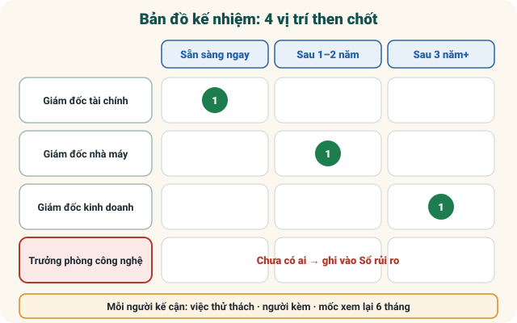

K9 · Lãnh đạo và phát triển người khác › Bậc 5 Dẫn dắt
Ôn tập: chuẩn bị lãnh đạo kế cận và kế nhiệm
Bài này làm Tờ 8: Bản đồ kế nhiệm. Mẫu in. Bài dùng lại Sổ rủi ro (Tờ 7) và cách kèm cặp ở Kèm cặp đồng nghiệp (N4).
1. Mục tiêu
- Lập Bản đồ kế nhiệm cho các vị trí then chốt, với 3 mức sẵn sàng của người kế cận.
- Viết kế hoạch phát triển cho một người kế cận: việc thử thách, người kèm, mốc xem lại.
2. Khởi động truy xuất
Câu hỏi trộn từ cả khóa. Trả lời không nhìn gì, rồi mới mở đáp án.
- Nhãn D và T trong Lịch điều hành nghĩa là gì?
- Trong pre-mortem, vì sao mỗi người viết riêng trước khi bàn?
- Mỗi chỗ phụ thuộc giữa hai khối cần có gì?
- Vì sao Bản định hướng phải có phần "Điều chưa biết"?
- Mỗi quyết định có bao nhiêu người quyết?
- Ba bước khi nghe tin xấu là gì?
- Mỗi rủi ro được viết theo ba vế nào?
Đáp án
- D: cấp dưới làm được. T: việc cấp tổ chức.
- Để ý kiến không bị cuốn theo người nói đầu, nhất là người chức cao.
- Một người điều phối có tên.
- Vì khi lãnh đạo im lặng, người ta tự đoán, thường đoán tệ hơn.
- Một người.
- Cảm ơn người báo; hỏi sự kiện; hỏi cần gì.
- Nguyên nhân → sự kiện → hậu quả.
Xem lại: Bản đồ khóa N6.
3. Giải thích
Hãy tự hỏi: nếu một người chủ chốt nghỉ đột ngột tuần sau, việc gì sẽ dừng? Nếu câu trả lời là "nhiều việc", đó là một rủi ro lớn của tổ chức.
Bước 1. Chọn vị trí then chốt. Vị trí mà nếu trống thì tổ chức bị ảnh hưởng nặng, và khó tuyển ngay từ ngoài.
Bước 2. Ghi người kế cận theo 3 mức sẵn sàng.
- Sẵn sàng ngay: làm được nếu phải nhận việc trong tuần.
- Sau 1–2 năm: còn thiếu một vài kinh nghiệm cụ thể.
- Sau 3 năm trở lên: có tiềm năng, cần phát triển nhiều.

Bước 3. Kế hoạch phát triển. Với mỗi người kế cận, ghi khoảng trống chính và cách lấp:
- Việc thử thách: quyền phụ trách tạm thời khi bạn đi vắng, dẫn một dự án liên khối, gặp khách hoặc đối tác lớn.
- Người kèm: ai gặp họ định kỳ, góp ý theo hành vi.
- Học chính thức: khóa học cho đúng khoảng trống, nếu cần.
- Mốc xem lại: mỗi 6 tháng, xem mức sẵn sàng đã đổi chưa.
Ba điều nên tránh
- Chọn người giống mìnhDựa vào kết quả và hành vi, không dựa vào cảm giác hợp.
- Chỉ một người đánh giáNghe thêm ít nhất hai người làm việc cùng họ.
- Giữ kín hoàn toànNgười kế cận cần biết mình đang được phát triển cho vai trò nào.
Vị trí chưa có ai kế cận thì ghi vào Sổ rủi ro của Bài 7, có người chủ và hạn.
4. Ví dụ tại nơi làm việc Việt Nam
Tình huống giả định. Một công ty dược phẩm ở Bình Dương có giám đốc nhà máy sắp nghỉ hưu sau 18 tháng. Tổng giám đốc, chị Trang, lập Tờ 8.
Chị chọn 4 vị trí then chốt. Với giám đốc nhà máy, có hai ứng viên. Anh Vũ, trưởng sản xuất, giỏi vận hành nhưng chưa làm việc với cơ quan quản lý. Chị Liên, trưởng đảm bảo chất lượng, nắm chắc quy định nhưng chưa quản lý quy mô lớn.
Chị Trang hỏi thêm ý kiến giám đốc nhân sự và giám đốc kỹ thuật. Cả hai được xếp "sau 1–2 năm".
Kế hoạch cho anh Vũ: dẫn đoàn làm việc với đoàn kiểm tra lần tới; người kèm là giám đốc nhà máy hiện tại. Kế hoạch cho chị Liên: phụ trách tạm một phân xưởng trong 6 tháng. Mốc xem lại: tháng thứ 6 và 12.
Vị trí trưởng phòng công nghệ chưa có ai. Chị ghi vào Sổ rủi ro, người chủ là giám đốc nhân sự.
Vì sao cách này tốt: có hai ứng viên, nhiều người đánh giá. Mỗi người có việc thử thách đúng khoảng trống. Vị trí trống được quản lý như rủi ro.
5. Thực hành
Tình huống giả định. Bạn là giám đốc điều hành một công ty du lịch lữ hành ở Đà Nẵng. Giám đốc kinh doanh là người duy nhất giữ quan hệ với 5 đối tác lớn.
Lập một dòng Bản đồ kế nhiệm cho vị trí này. Viết kế hoạch phát triển cho một người kế cận.
Gợi ý 1
Nếu quan hệ đối tác nằm trong tay một người, khoảng trống lớn nhất của người kế cận là gì?
Gợi ý 2
Việc thử thách tốt cho khoảng trống này là được đi cùng, rồi tự phụ trách một đối tác.
Lời giải mẫu
- Vị trí: giám đốc kinh doanh. Người kế cận: chị Thư, trưởng nhóm khách đoàn, mức "sau 1–2 năm".
- Khoảng trống: chưa có quan hệ với đối tác lớn; chưa đàm phán hợp đồng năm.
- Việc thử thách: đi cùng giám đốc kinh doanh gặp 5 đối tác trong quý tới; tự phụ trách 1 đối tác từ quý sau.
- Người kèm: giám đốc kinh doanh, gặp 2 tuần một lần.
- Mốc xem lại: sau 6 tháng.
- Sổ rủi ro: thêm dòng "quan hệ đối tác chỉ nằm ở một người", người chủ là bạn.
(Thông tin là giả định.)
6. Tự kiểm tra
Chọn đáp án. Mỗi lựa chọn đều có giải thích.
Câu 1. Bạn định chọn người kế cận vì anh ấy làm việc rất hợp ý bạn. Điều gì còn thiếu?
-
Chưa đúng. Hợp ý dễ dẫn đến chọn người giống mình. Tổ chức có thể cần kỹ năng khác.
-
Đúng. Đúng. Nhiều nguồn đánh giá giúp giảm thiên lệch của một người.
-
Chưa đúng. Bài trắc nghiệm không thay được bằng chứng về kết quả và hành vi trong việc thật.
Câu 2. Vị trí giám đốc công nghệ chưa có ai kế cận. Nên xử lý thế nào?
-
Chưa đúng. Lúc đó có thể đã muộn. Vị trí then chốt bỏ trống là rủi ro lớn.
-
Đúng. Đúng. Quản lý vị trí trống như một rủi ro, có người lo và có ngưỡng.
-
Chưa đúng. Điền cho đủ thì bảng đẹp nhưng rủi ro vẫn còn.
Câu 3. Người kế cận giỏi chuyên môn nhưng chưa từng làm việc với hội đồng quản trị. Việc thử thách nào phù hợp?
-
Chưa đúng. Khóa học có thể giúp, nhưng chưa cho trải nghiệm thật với hội đồng.
-
Đúng. Đúng. Việc thử thách đúng khoảng trống, có người kèm, giúp học từ trải nghiệm thật.
-
Chưa đúng. Học khi đã ngồi ghế thì rủi ro cao hơn cho cả người đó và tổ chức.
Câu 4. Ôn tập: tổng giám đốc phải duyệt mọi đơn mua nhỏ, nên không có thời gian gặp người kế cận. Hai công cụ nào của khóa giúp nhất?
-
Đúng. Đúng. Lịch tách việc D khỏi việc T. Bảng quyền chuyển quyền duyệt xuống theo ngưỡng.
-
Chưa đúng. Hai công cụ này dùng cho quyết định lớn và truyền đạt, không giải phóng thời gian.
-
Chưa đúng. Hai công cụ này giúp thấy rủi ro, nhưng không bớt việc duyệt nhỏ.
Câu 5. Ôn tập: ba tháng qua mọi khối báo "ổn", nhưng doanh thu từ khách cũ giảm. Bước nào nên làm trước?
-
Đúng. Đúng. Khi báo cáo và số liệu không khớp, tin có thể đang bị lọc. Hãy tìm tin thật.
-
Chưa đúng. Chưa hiểu nguyên nhân thì đổi chiến lược là quyết vội.
-
Chưa đúng. Báo cáo dài hơn vẫn đi qua cùng các lớp lọc.
7. Phản tư
- Nếu bạn nghỉ đột ngột tuần sau, ai làm thay? Họ đã sẵn sàng đến đâu?
- Người kế cận của bạn có giống bạn quá không?
8. Áp dụng thật
Trong 7 ngày tới, lập Tờ 8 cho ít nhất 3 vị trí then chốt. Hỏi ý kiến ít nhất hai người về mỗi ứng viên. Đưa vị trí chưa có người kế cận vào Sổ rủi ro.
Mức bằng chứng. Bài dựa trên mô tả năng lực "Developing Self and Others" (UK Success Profiles) và "Leading People" (US OPM, 2025). Ba mức sẵn sàng và Tờ 8 là cách làm do site đề xuất. Site chưa tìm thấy nghiên cứu có bình duyệt đủ mạnh về từng bước kế nhiệm.
9. Siêu dữ liệu
| skill | K9 · Lãnh đạo và phát triển người khác |
|---|---|
| level | Bậc 5 · Dẫn dắt |
| group | N6 |
| framework_map | UK Civil Service Success Profiles: Developing Self and Others; Leadership; US OPM ECQs (2025): Leading People; WEF: Talent management; SkillsFuture CCS: Developing People; NACE: Leadership (chỉ dẫn chiếu) |
| updated | 2026-11-14 |
Hoàn thành bài
Đánh dấu đã học để site gợi ý lịch ôn sau 1, 3 và 7 ngày. Dữ liệu chỉ lưu trên máy của bạn.
Lịch ôn gợi ý: